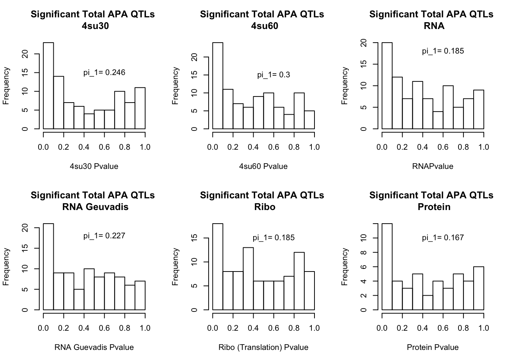
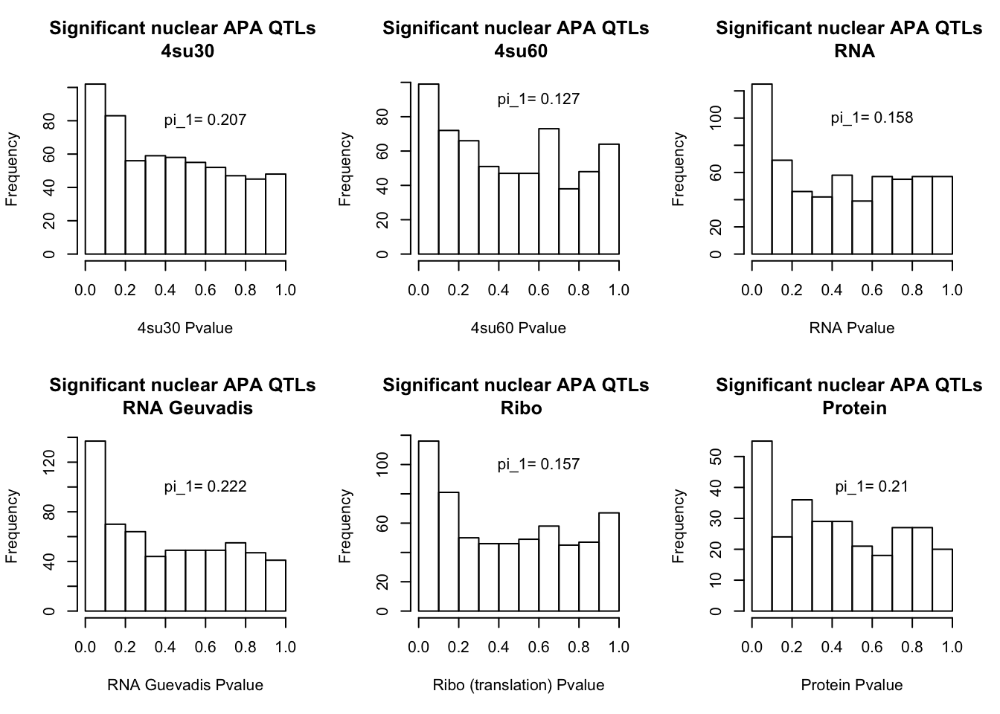

Last updated: 2018-10-09
workflowr checks: (Click a bullet for more information) ✔ R Markdown file: up-to-date
Great! Since the R Markdown file has been committed to the Git repository, you know the exact version of the code that produced these results.
✔ Environment: empty
Great job! The global environment was empty. Objects defined in the global environment can affect the analysis in your R Markdown file in unknown ways. For reproduciblity it’s best to always run the code in an empty environment.
✔ Seed:
set.seed(12345)
The command set.seed(12345) was run prior to running the code in the R Markdown file. Setting a seed ensures that any results that rely on randomness, e.g. subsampling or permutations, are reproducible.
✔ Session information: recorded
Great job! Recording the operating system, R version, and package versions is critical for reproducibility.
✔ Repository version: 605aa2d
wflow_publish or wflow_git_commit). workflowr only checks the R Markdown file, but you know if there are other scripts or data files that it depends on. Below is the status of the Git repository when the results were generated:
Ignored files:
Ignored: .DS_Store
Ignored: .Rhistory
Ignored: .Rproj.user/
Ignored: output/.DS_Store
Untracked files:
Untracked: KalistoAbundance18486.txt
Untracked: analysis/genometrack_figs.Rmd
Untracked: analysis/ncbiRefSeq_sm.sort.mRNA.bed
Untracked: analysis/snake.config.notes.Rmd
Untracked: analysis/verifyBAM.Rmd
Untracked: data/18486.genecov.txt
Untracked: data/APApeaksYL.total.inbrain.bed
Untracked: data/NuclearApaQTLs.txt
Untracked: data/RNAkalisto/
Untracked: data/TotalApaQTLs.txt
Untracked: data/Totalpeaks_filtered_clean.bed
Untracked: data/YL-SP-18486-T-combined-genecov.txt
Untracked: data/YL-SP-18486-T_S9_R1_001-genecov.txt
Untracked: data/apaExamp/
Untracked: data/bedgraph_peaks/
Untracked: data/bin200.5.T.nuccov.bed
Untracked: data/bin200.Anuccov.bed
Untracked: data/bin200.nuccov.bed
Untracked: data/clean_peaks/
Untracked: data/comb_map_stats.csv
Untracked: data/comb_map_stats.xlsx
Untracked: data/comb_map_stats_39ind.csv
Untracked: data/combined_reads_mapped_three_prime_seq.csv
Untracked: data/ensemble_to_genename.txt
Untracked: data/filtered_APApeaks_merged_allchrom_refseqTrans.closest2End.bed
Untracked: data/filtered_APApeaks_merged_allchrom_refseqTrans.closest2End.noties.bed
Untracked: data/first50lines_closest.txt
Untracked: data/gencov.test.csv
Untracked: data/gencov.test.txt
Untracked: data/gencov_zero.test.csv
Untracked: data/gencov_zero.test.txt
Untracked: data/gene_cov/
Untracked: data/joined
Untracked: data/leafcutter/
Untracked: data/merged_combined_YL-SP-threeprimeseq.bg
Untracked: data/mol_overlap/
Untracked: data/nom_QTL/
Untracked: data/nom_QTL_opp/
Untracked: data/nom_QTL_trans/
Untracked: data/nuc6up/
Untracked: data/other_qtls/
Untracked: data/peakPerRefSeqGene/
Untracked: data/perm_QTL/
Untracked: data/perm_QTL_opp/
Untracked: data/perm_QTL_trans/
Untracked: data/reads_mapped_three_prime_seq.csv
Untracked: data/smash.cov.results.bed
Untracked: data/smash.cov.results.csv
Untracked: data/smash.cov.results.txt
Untracked: data/smash_testregion/
Untracked: data/ssFC200.cov.bed
Untracked: data/temp.file1
Untracked: data/temp.file2
Untracked: data/temp.gencov.test.txt
Untracked: data/temp.gencov_zero.test.txt
Untracked: output/picard/
Untracked: output/plots/
Untracked: output/qual.fig2.pdf
Unstaged changes:
Modified: analysis/28ind.peak.explore.Rmd
Modified: analysis/39indQC.Rmd
Modified: analysis/PeakToGeneAssignment.Rmd
Modified: analysis/cleanupdtseq.internalpriming.Rmd
Modified: analysis/dif.iso.usage.leafcutter.Rmd
Modified: analysis/diff_iso_pipeline.Rmd
Modified: analysis/explore.filters.Rmd
Modified: analysis/overlapMolQTL.Rmd
Modified: analysis/overlap_qtls.Rmd
Modified: analysis/peakOverlap_oppstrand.Rmd
Modified: analysis/pheno.leaf.comb.Rmd
Modified: analysis/swarmPlots_QTLs.Rmd
Modified: analysis/test.max2.Rmd
Modified: code/Snakefile
In the OverlapMolQTL analysis I looked at significant molecular QTLs and asked if they are also significant snp:gene pairs in the ApaQTLs. In this analysis, I will look at the significant ApaQTLs and ask if the snp:gene pairs are significant in the other molecular phenotypes. I expect enrichment of low pvalues in protQTLs but less in RNA.
I am going to complete this analysis first for the totalAPA QTLs.
library(workflowr)This is workflowr version 1.1.1
Run ?workflowr for help getting startedlibrary(reshape2)
library(tidyverse)── Attaching packages ─────────────────────────────────────── tidyverse 1.2.1 ──✔ ggplot2 3.0.0 ✔ purrr 0.2.5
✔ tibble 1.4.2 ✔ dplyr 0.7.6
✔ tidyr 0.8.1 ✔ stringr 1.3.1
✔ readr 1.1.1 ✔ forcats 0.3.0── Conflicts ────────────────────────────────────────── tidyverse_conflicts() ──
✖ dplyr::filter() masks stats::filter()
✖ dplyr::lag() masks stats::lag()library(VennDiagram)Loading required package: gridLoading required package: futile.loggerlibrary(data.table)
Attaching package: 'data.table'The following objects are masked from 'package:dplyr':
between, first, lastThe following object is masked from 'package:purrr':
transposeThe following objects are masked from 'package:reshape2':
dcast, meltlibrary(qvalue)
set.seed(327)sigTotAPAinMolPheno.R
#!/bin/rscripts
#this script creates takes in the permuted APAQTL results for the total fraction and nominal pvalues from the molecular phenotpye molecular phenotype
library(dplyr)
library(tidyr)
library(ggplot2)
library(readr)
library(optparse)
geneNames=read.table("/project2/gilad/briana/genome_anotation_data/ensemble_to_genename.txt", sep="\t", header=T, stringsAsFactors = F)
tot_perm=read.table("/project2/gilad/briana/threeprimeseq/data/perm_APAqtl_trans/filtered_APApeaks_merged_allchrom_refseqGenes_pheno_Total_transcript_permResBH.txt", header = T,stringsAsFactors=F)
sigSNPgene=tot_perm %>% filter(-log10(bh)>1) %>% separate(pid, into=c("chr", "start", "end", "id"), sep=":") %>% separate(id, into=c("Gene.name", "strand", "peaknum"), sep="_") %>% dplyr::select(Gene.name, sid, bh) %>% group_by(Gene.name) %>% top_n(-1, bh) %>% ungroup() %>% dplyr::select(Gene.name, sid)
option_list = list(
make_option(c("-M", "--molNom"), action="store", default=NA, type='character', help="molecular Nom results"),
make_option(c("-O", "--output"), action="store", default=NA, type='character', help="output file for total APA sig snps in mol qtl")
)
opt_parser <- OptionParser(option_list=option_list)
opt <- parse_args(opt_parser)
if (opt$molNom == "/project2/gilad/briana/threeprimeseq/data/molecular_QTLs/nom/fastqtl_qqnorm_prot.fixed.nominal.out") {
in_file=read.table(opt$molNom, col.names = c("Gene.stable.ID", "sid", "dist", "pval", "slope"),stringsAsFactors=F)
file_newNames=in_file %>% inner_join(geneNames, by="Gene.stable.ID") %>% dplyr::select("Gene.name", "sid", "pval")
} else {
in_file=read.table(opt$molNom, col.names = c("pid", "sid", "dist", "pval", "slope"),stringsAsFactors=F)
file_newNames=in_file %>% separate(pid, into=c("Gene.stable.ID", "ver"), sep ="[.]") %>% inner_join(geneNames, by="Gene.stable.ID") %>% dplyr::select("Gene.name", "sid", "pval")
}
overlap= file_newNames %>% semi_join(sigSNPgene, by=c("Gene.name", "sid"))
write.table(overlap, file=opt$output, quote=F, col.names = T, row.names = F)Run this first on the rnaQTLs.
run_sigTotAPAinMolPhenoRNA.sh
#!/bin/bash
#SBATCH --job-name=run_sigTotAPAinMolPhenoRNA
#SBATCH --account=pi-yangili1
#SBATCH --time=24:00:00
#SBATCH --output=run_sigTotAPAinMolPhenoRNA.out
#SBATCH --error=run_sigTotAPAinMolPhenoRNA.err
#SBATCH --partition=bigmem2
#SBATCH --mem=64G
#SBATCH --mail-type=END
module load R
Rscript sigTotAPAinMolPheno.R --molNom "/project2/gilad/briana/threeprimeseq/data/molecular_QTLs/nom/fastqtl_qqnorm_RNAseq_phase2.fixed.nominal.out" --output "/project2/gilad/briana/threeprimeseq/data/molecular_overlap/APA2molTotal/TotAPAqtlsPvalRNA.txt" run_sigTotAPAinMolPhenoProt.sh
#!/bin/bash
#SBATCH --job-name=run_sigTotAPAinMolPhenoProt
#SBATCH --account=pi-yangili1
#SBATCH --time=24:00:00
#SBATCH --output=run_sigTotAPAinMolPhenoProt.out
#SBATCH --error=run_sigTotAPAinMolPhenoProt.err
#SBATCH --partition=bigmem2
#SBATCH --mem=64G
#SBATCH --mail-type=END
module load R
Rscript sigTotAPAinMolPheno.R --molNom "/project2/gilad/briana/threeprimeseq/data/molecular_QTLs/nom/fastqtl_qqnorm_prot.fixed.nominal.out" --output "/project2/gilad/briana/threeprimeseq/data/molecular_overlap/APA2molTotal/TotAPAqtlsPvalProtein.txt"
run_sigTotAPAinMolPhenoProt.sh
#!/bin/bash
#SBATCH --job-name=run_sigTotAPAinMolPhenoProt
#SBATCH --account=pi-yangili1
#SBATCH --time=24:00:00
#SBATCH --output=run_sigTotAPAinMolPhenoProt.out
#SBATCH --error=run_sigTotAPAinMolPhenoProt.err
#SBATCH --partition=bigmem2
#SBATCH --mem=64G
#SBATCH --mail-type=END
module load R
Rscript sigTotAPAinMolPheno.R --molNom "/project2/gilad/briana/threeprimeseq/data/molecular_QTLs/nom/fastqtl_qqnorm_prot.fixed.nominal.out" --output "/project2/gilad/briana/threeprimeseq/data/molecular_overlap/APA2molTotal/TotAPAqtlsPvalProtein.txt"
run_sigTotAPAinMolPhenoRNAg.sh
#!/bin/bash
#SBATCH --job-name=run_sigTotAPAinMolPhenoRNAg
#SBATCH --account=pi-yangili1
#SBATCH --time=24:00:00
#SBATCH --output=run_sigTotAPAinMolPhenoRNAg.out
#SBATCH --error=run_sigTotAPAinMolPhenoRNAg.err
#SBATCH --partition=bigmem2
#SBATCH --mem=64G
#SBATCH --mail-type=END
module load R
Rscript sigTotAPAinMolPheno.R --molNom "/project2/gilad/briana/threeprimeseq/data/molecular_QTLs/nom/fastqtl_qqnorm_RNAseqGeuvadis.fixed.nominal.out" --output "/project2/gilad/briana/threeprimeseq/data/molecular_overlap/APA2molTotal/TotAPAqtlsPvalRNAg.txt"
run_sigTotAPAinMolPhenoRibo.sh
#!/bin/bash
#SBATCH --job-name=run_sigTotAPAinMolPhenoRibo
#SBATCH --account=pi-yangili1
#SBATCH --time=24:00:00
#SBATCH --output=run_sigTotAPAinMolPhenoRibo.out
#SBATCH --error=run_sigTotAPAinMolPhenoRibo.err
#SBATCH --partition=bigmem2
#SBATCH --mem=64G
#SBATCH --mail-type=END
module load R
Rscript sigTotAPAinMolPheno.R --molNom "/project2/gilad/briana/threeprimeseq/data/molecular_QTLs/nom/fastqtl_qqnorm_ribo_phase2.fixed.nominal.out" --output "/project2/gilad/briana/threeprimeseq/data/molecular_overlap/APA2molTotal/TotAPAqtlsPvalribo.txt"
run_sigTotAPAinMolPheno4su.sh
#!/bin/bash
#SBATCH --job-name=run_sigTotAPAinMolPheno4su
#SBATCH --account=pi-yangili1
#SBATCH --time=24:00:00
#SBATCH --output=run_sigTotAPAinMolPheno4su.out
#SBATCH --error=run_sigTotAPAinMolPheno4su.err
#SBATCH --partition=bigmem2
#SBATCH --mem=64G
#SBATCH --mail-type=END
module load R
Rscript sigTotAPAinMolPheno.R --molNom "/project2/gilad/briana/threeprimeseq/data/molecular_QTLs/nom/fastqtl_qqnorm_4su30.fixed.nominal.out" --output "/project2/gilad/briana/threeprimeseq/data/molecular_overlap/APA2molTotal/TotAPAqtlsPval4su30.txt"
Rscript sigTotAPAinMolPheno.R --molNom "/project2/gilad/briana/threeprimeseq/data/molecular_QTLs/nom/fastqtl_qqnorm_4su60.fixed.nominal.out" --output "/project2/gilad/briana/threeprimeseq/data/molecular_overlap/APA2molTotal/TotAPAqtlsPval4su60.txt" sigNucAPAinMolPheno.R
#!/bin/rscripts
#this script creates takes in the permuted APAQTL results for the total fraction and nominal pvalues from the molecular phenotpye molecular phenotype
library(dplyr)
library(tidyr)
library(ggplot2)
library(readr)
library(optparse)
geneNames=read.table("/project2/gilad/briana/genome_anotation_data/ensemble_to_genename.txt", sep="\t", header=T, stringsAsFactors = F)
nuc_perm=read.table("/project2/gilad/briana/threeprimeseq/data/perm_APAqtl_trans/filtered_APApeaks_merged_allchrom_refseqGenes_pheno_Nuclear_transcript_permResBH.txt", header = T,stringsAsFactors=F)
sigSNPgene=nuc_perm %>% filter(-log10(bh)>1) %>% separate(pid, into=c("chr", "start", "end", "id"), sep=":") %>% separate(id, into=c("Gene.name", "strand", "peaknum"), sep="_") %>% dplyr::select(Gene.name, sid, bh) %>% group_by(Gene.name) %>% top_n(-1, bh) %>% ungroup() %>% dplyr::select(Gene.name, sid)
option_list = list(
make_option(c("-M", "--molNom"), action="store", default=NA, type='character', help="molecular Nom results"),
make_option(c("-O", "--output"), action="store", default=NA, type='character', help="output file for total APA sig snps in mol qtl")
)
opt_parser <- OptionParser(option_list=option_list)
opt <- parse_args(opt_parser)
if (opt$molNom == "/project2/gilad/briana/threeprimeseq/data/molecular_QTLs/nom/fastqtl_qqnorm_prot.fixed.nominal.out") {
in_file=read.table(opt$molNom, col.names = c("Gene.stable.ID", "sid", "dist", "pval", "slope"),stringsAsFactors=F)
file_newNames=in_file %>% inner_join(geneNames, by="Gene.stable.ID") %>% dplyr::select("Gene.name", "sid", "pval")
} else {
in_file=read.table(opt$molNom, col.names = c("pid", "sid", "dist", "pval", "slope"),stringsAsFactors=F)
file_newNames=in_file %>% separate(pid, into=c("Gene.stable.ID", "ver"), sep ="[.]") %>% inner_join(geneNames, by="Gene.stable.ID") %>% dplyr::select("Gene.name", "sid", "pval")
}
overlap= file_newNames %>% semi_join(sigSNPgene, by=c("Gene.name", "sid"))
write.table(overlap, file=opt$output, quote=F, col.names = T, row.names = F)1 bash script for all of the phenotypes
run_sigNucAPAinMolPheno.sh
#!/bin/bash
#SBATCH --job-name=run_sigNucAPAinMolPheno
#SBATCH --account=pi-yangili1
#SBATCH --time=24:00:00
#SBATCH --output=run_sigNucAPAinMolPheno.out
#SBATCH --error=run_sigNucAPAinMolPheno.err
#SBATCH --partition=broadwl
#SBATCH --mem=32G
#SBATCH --mail-type=END
module load R
Rscript sigNucAPAinMolPheno.R --molNom "/project2/gilad/briana/threeprimeseq/data/molecular_QTLs/nom/fastqtl_qqnorm_RNAseq_phase2.fixed.nominal.out" --output "/project2/gilad/briana/threeprimeseq/data/molecular_overlap/APA2molNuclear/NucAPAqtlsPvalRNA.txt"
Rscript sigNucAPAinMolPheno.R --molNom "/project2/gilad/briana/threeprimeseq/data/molecular_QTLs/nom/fastqtl_qqnorm_prot.fixed.nominal.out" --output "/project2/gilad/briana/threeprimeseq/data/molecular_overlap/APA2molNuclear/NucAPAqtlsPvalProtein.txt"
Rscript sigNucAPAinMolPheno.R --molNom "/project2/gilad/briana/threeprimeseq/data/molecular_QTLs/nom/fastqtl_qqnorm_RNAseqGeuvadis.fixed.nominal.out" --output "/project2/gilad/briana/threeprimeseq/data/molecular_overlap/APA2molNuclear/NucAPAqtlsPvalRNAg.txt"
Rscript sigNucAPAinMolPheno.R --molNom "/project2/gilad/briana/threeprimeseq/data/molecular_QTLs/nom/fastqtl_qqnorm_ribo_phase2.fixed.nominal.out" --output "/project2/gilad/briana/threeprimeseq/data/molecular_overlap/APA2molNuclear/NucAPAqtlsPvalribo.txt"
Rscript sigNucAPAinMolPheno.R --molNom "/project2/gilad/briana/threeprimeseq/data/molecular_QTLs/nom/fastqtl_qqnorm_4su30.fixed.nominal.out" --output "/project2/gilad/briana/threeprimeseq/data/molecular_overlap/APA2molNuclear/NucAPAqtlsPval4su30.txt"
Rscript sigNucAPAinMolPheno.R --molNom "/project2/gilad/briana/threeprimeseq/data/molecular_QTLs/nom/fastqtl_qqnorm_4su60.fixed.nominal.out" --output "/project2/gilad/briana/threeprimeseq/data/molecular_overlap/APA2molNuclear/NucAPAqtlsPval4su60.txt"
I will next estimate sharing with pi_1 and create histograms of the resulting pvalues.
totAPAinProt=read.table("../data/mol_overlap/APA2molTotal/TotAPAqtlsPvalProtein.txt", header = T, stringsAsFactors = F)
qval_prot=pi0est(totAPAinProt$pval, pi0.method = "bootstrap")totAPAinRNA=read.table("../data/mol_overlap/APA2molTotal/TotAPAqtlsPvalRNA.txt", header = T, stringsAsFactors = F)
qval_RNA=pi0est(totAPAinRNA$pval, pi0.method = "bootstrap")totAPAinRNAg=read.table("../data/mol_overlap/APA2molTotal/TotAPAqtlsPvalRNAg.txt", header = T, stringsAsFactors = F)
qval_RNAg=pi0est(totAPAinRNAg$pval, pi0.method = "bootstrap")*Ribo
totAPAinRibo=read.table("../data/mol_overlap/APA2molTotal/TotAPAqtlsPvalribo.txt", header = T, stringsAsFactors = F)
qval_Ribo=pi0est(totAPAinRibo$pval, pi0.method = "bootstrap")totAPAinsu30=read.table("../data/mol_overlap/APA2molTotal/TotAPAqtlsPval4su30.txt", header = T, stringsAsFactors = F)
qval_su30=pi0est(totAPAinsu30$pval, pi0.method = "bootstrap")totAPAinsu60=read.table("../data/mol_overlap/APA2molTotal/TotAPAqtlsPval4su60.txt", header = T, stringsAsFactors = F)
qval_su60=pi0est(totAPAinsu60$pval, pi0.method = "bootstrap")All plots:
par(mfrow=c(2,3))
hist(totAPAinsu30$pval, xlab="4su30 Pvalue", main="Significant Total APA QTLs \n 4su30")
text(.6,15, paste("pi_1=", round((1-qval_su30$pi0), digit=3), sep=" "))
hist(totAPAinsu60$pval, xlab="4su60 Pvalue", main="Significant Total APA QTLs \n 4su60")
text(.6,15, paste("pi_1=", round((1-qval_su60$pi0), digit=3), sep=" "))
hist(totAPAinRNA$pval, xlab="RNAPvalue", main="Significant Total APA QTLs \n RNA")
text(.6,18, paste("pi_1=", round((1-qval_RNA$pi0), digit=3), sep=" "))
hist(totAPAinRNAg$pval, xlab="RNA Guevadis Pvalue", main="Significant Total APA QTLs \n RNA Geuvadis")
text(.6,18, paste("pi_1=", round((1-qval_RNAg$pi0), digit=3), sep=" "))
hist(totAPAinRibo$pval, xlab="Ribo (Translation) Pvalue", main="Significant Total APA QTLs \n Ribo")
text(.6,15, paste("pi_1=", round((1-qval_Ribo$pi0), digit=3), sep=" "))
hist(totAPAinProt$pval, xlab="Protein Pvalue", main="Significant Total APA QTLs \n Protein")
text(.6,10, paste("pi_1=", round((1-qval_prot$pi0), digit=3), sep=" "))
I will next estimate sharing with pi_1 and create histograms of the resulting pvalues.
NucAPAinProt=read.table("../data/mol_overlap/APA2molNuclear/NucAPAqtlsPvalProtein.txt", header = T, stringsAsFactors = F)
qval_protN=pi0est(NucAPAinProt$pval, pi0.method = "bootstrap")NucAPAinRNA=read.table("../data/mol_overlap/APA2molNuclear/NucAPAqtlsPvalRNA.txt", header = T, stringsAsFactors = F)
qval_RNAN=pi0est(NucAPAinRNA$pval, pi0.method = "bootstrap")NucAPAinRNAg=read.table("../data/mol_overlap/APA2molNuclear/NucAPAqtlsPvalRNAg.txt", header = T, stringsAsFactors = F)
qval_RNAgN=pi0est(NucAPAinRNAg$pval, pi0.method = "bootstrap")*Ribo
NucAPAinRibo=read.table("../data/mol_overlap/APA2molNuclear/NucAPAqtlsPvalribo.txt", header = T, stringsAsFactors = F)
qval_RiboN=pi0est(NucAPAinRibo$pval, pi0.method = "bootstrap")NucAPAinsu30=read.table("../data/mol_overlap/APA2molNuclear/NucAPAqtlsPval4su30.txt", header = T, stringsAsFactors = F)
qval_su30N=pi0est(NucAPAinsu30$pval, pi0.method = "bootstrap")NucAPAinsu60=read.table("../data/mol_overlap/APA2molNuclear/NucAPAqtlsPval4su60.txt", header = T, stringsAsFactors = F)
qval_su60N=pi0est(NucAPAinsu60$pval, pi0.method = "bootstrap")All plots:
par(mfrow=c(2,3))
hist(NucAPAinsu30$pval, xlab="4su30 Pvalue", main="Significant nuclear APA QTLs \n 4su30")
text(.6,80, paste("pi_1=", round((1-qval_su30N$pi0), digit=3), sep=" "))
hist(NucAPAinsu60$pval,xlab="4su60 Pvalue",main="Significant nuclear APA QTLs \n 4su60")
text(.6,90, paste("pi_1=", round((1-qval_su60N$pi0), digit=3), sep=" "))
hist(NucAPAinRNA$pval, xlab="RNA Pvalue",main="Significant nuclear APA QTLs \n RNA")
text(.6,100, paste("pi_1=", round((1-qval_RNAN$pi0), digit=3), sep=" "))
hist(NucAPAinRNAg$pval, xlab="RNA Guevadis Pvalue",main="Significant nuclear APA QTLs \n RNA Geuvadis")
text(.6,100, paste("pi_1=", round((1-qval_RNAgN$pi0), digit=3), sep=" "))
hist(NucAPAinRibo$pval, xlab="Ribo (translation) Pvalue",main="Significant nuclear APA QTLs \n Ribo")
text(.6,100, paste("pi_1=", round((1-qval_RiboN$pi0), digit=3), sep=" "))
hist(NucAPAinProt$pval, xlab="Protein Pvalue", main="Significant nuclear APA QTLs \n Protein")
text(.6,40, paste("pi_1=", round((1-qval_protN$pi0), digit=3), sep=" "))
sessionInfo()R version 3.5.1 (2018-07-02)
Platform: x86_64-apple-darwin15.6.0 (64-bit)
Running under: macOS Sierra 10.12.6
Matrix products: default
BLAS: /Library/Frameworks/R.framework/Versions/3.5/Resources/lib/libRblas.0.dylib
LAPACK: /Library/Frameworks/R.framework/Versions/3.5/Resources/lib/libRlapack.dylib
locale:
[1] en_US.UTF-8/en_US.UTF-8/en_US.UTF-8/C/en_US.UTF-8/en_US.UTF-8
attached base packages:
[1] grid stats graphics grDevices utils datasets methods
[8] base
other attached packages:
[1] qvalue_2.12.0 data.table_1.11.8 VennDiagram_1.6.20
[4] futile.logger_1.4.3 forcats_0.3.0 stringr_1.3.1
[7] dplyr_0.7.6 purrr_0.2.5 readr_1.1.1
[10] tidyr_0.8.1 tibble_1.4.2 ggplot2_3.0.0
[13] tidyverse_1.2.1 reshape2_1.4.3 workflowr_1.1.1
loaded via a namespace (and not attached):
[1] tidyselect_0.2.4 splines_3.5.1 haven_1.1.2
[4] lattice_0.20-35 colorspace_1.3-2 htmltools_0.3.6
[7] yaml_2.2.0 rlang_0.2.2 R.oo_1.22.0
[10] pillar_1.3.0 glue_1.3.0 withr_2.1.2
[13] R.utils_2.7.0 lambda.r_1.2.3 modelr_0.1.2
[16] readxl_1.1.0 bindrcpp_0.2.2 bindr_0.1.1
[19] plyr_1.8.4 munsell_0.5.0 gtable_0.2.0
[22] cellranger_1.1.0 rvest_0.3.2 R.methodsS3_1.7.1
[25] evaluate_0.11 knitr_1.20 broom_0.5.0
[28] Rcpp_0.12.19 formatR_1.5 backports_1.1.2
[31] scales_1.0.0 jsonlite_1.5 hms_0.4.2
[34] digest_0.6.17 stringi_1.2.4 rprojroot_1.3-2
[37] cli_1.0.1 tools_3.5.1 magrittr_1.5
[40] lazyeval_0.2.1 futile.options_1.0.1 crayon_1.3.4
[43] whisker_0.3-2 pkgconfig_2.0.2 xml2_1.2.0
[46] lubridate_1.7.4 assertthat_0.2.0 rmarkdown_1.10
[49] httr_1.3.1 rstudioapi_0.8 R6_2.3.0
[52] nlme_3.1-137 git2r_0.23.0 compiler_3.5.1
This reproducible R Markdown analysis was created with workflowr 1.1.1